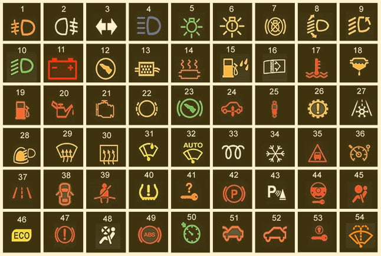

Araç gösterge paneli işaretleri ve anlamları

Ön sis lambalarınızın açık olduğunu gösteren ikaz ışığıdır.
Arka sis lambalarınızın açık olduğunu gösteren ikaz ışığıdır.
Sağa yada sola sinyal verdiğinizi gösteren ikaz ışığıdır.
Uzun farlarınızın açık olduğunu gösteren ikaz ışığıdır.
Kısa farlar, sinyal ve stop lambalarının birinin açık yada arızalı olduğunu gösteren ikaz ışığıdır.
Arabanızdaki far yada lambalardan herhangi birinin arızalı olduğunu gösteren ikaz ışığıdır.
Arabanızdaki fren lambalarından birinin ampulünün arızalı olduğunu gösteren ikaz ışığıdır.
Adaptif ışık sistemininin arızalı olduğunu gösteren ikaz ışığıdır.
Aracınızın far seviye kontrol sisteminde sorun olduğunu gösteren ikaz ışığıdır.
Kısa farların açık olması durumunda yanan ikaz ışığıdır.
Akünün arızalı olması, akünün bitmesi, şarj dinamosu arızası gibi durumlarda yanan ikaz ışığıdır.
Motorun çalışması için marşla beraber fren pedalına basmanız gerektiği gösteren ikaz ışığıdır. Bu özellik genelde son model arabalarda oluyor. Frene basmadan marşa basarsanız araba çalışmıyor.
Partikül filtresinin kurumla dolduğunu gösteren ikaz ışığıdır. Bu ikaz ışığı yanan araçların motorları kendilerini
korumaya alarak belli bir hızın üzerine çıkmanıza izin vermiyor. Bu durumda yapmanız gereken aracınızı en yakın yetkili servise götürmektir.
Katalizör sisteminde arıza olması durumunda yanan ikaz ışığıdır. (Bu sistem egzozdan çıkan zararlı gazları çevre
için zararsız hale getirir)
Yakıt filtresindeki su seviyesinin arttığını gösterir. Genelde kalitesiz yakıt alan sürücüler bu durumla karşılar.
Bu ikaz ışığı ile karşılaşmanız durumunda yakıt filtresinde su, filtrenin alt kısmındaki tahliye musluğu açılarak boşaltılmalıdır.
Motor hava filtresinin kirli yada eskimiş olduğunu gösteren ikaz ışığıdır. Bu ikaz ışığı yandığında en kısa zamanda
hava filtresinin temizlenmesi yada değişmesi gerekir.
Motor soğutma sıvısının fazla ısındığını gösteren ikaz ışığıdır. Bu ikaz ışığı yandığında motoru hemen stop edip,
motorun soğumasını beklemeniz gerekir.
Yakıt filtresinin kirli yada esmiş olduğunu gösteren ikaz ışığıdır. En kısa zamanda yakıt filtresini temizletmeniz
yada değiştirmeniz gerekir.
Yakıt seviyesinin azaldığını gösteren ikaz ışığıdır.
Yağ seviyesinin azaldığını gösteren ikaz ışığıdır. Bu durumda yapmanız gereken aracınızın yağ seviyesini kontrol etmek ve eksik olan yağı tamamlamaktır.
Motor arızası olduğunu gösteren ikaz ışığıdır. Bu gösterge aracınızı çalıştırırken yanar ve söner. Eğer aracınız
çalıştıktan sonra bu ikaz ışığı sönmüyorsa aracınızı acilen servise götürmeniz gerekir. Ciddi bir motor arızası
olabilir.
Fren balatalarının aşındığını gösteren ikaz ışığıdır. En yakın zamanda fren balatalarını değiştirmeniz
gerekmektedir.
Otomatik vitesli araçlarda görülen bu ikaz ışığı, vites kolunu oynatabilmek için frene basmanız gerektiğini
gösterir.
Hava süspansiyon ikaz ışığı
Süspansiyon sisteminin arızalandığını gösteren ikaz ışığıdır.
Otomatik vitesin arızalandığını gösteren ikaz ışığıdır.
Dışarıdaki hava durumunu gösteren ikaz ışığıdır.
Aydınlık ve yağmur sensörünü gösteren ikaz ışığıdır.
Ön camın buz çözme özelliğinin aktif olduğunu gösteren ikaz ışığıdır.
Arka camın buz çözme özelliğinin aktif olduğunu gösteren ikaz ışığıdır.
Yağmur sensörünün aktif olduğunu gösteren ikaz ışığıdır.
Otomatik cam sileceğinin aktif olduğunu gösteren gösteren ikaz ışığıdır.
Dizel motorlarda bulunan ısıtma bujilerini gösteren ikaz ışığıdır. Kızdırma bujilerinin ikaz ışığı sönmeden marşa
basılmamalıdır.
Buzlu ve kaygan yollarda kullanılması gereken kış modu butonu. Bu özellik bazı araçlarda bulunmamaktadır.
Takip mesafesi ikaz ışığıdır. Bu özellik bazı araçlarda bulunmamaktadır.
Hız sınırının aşıldığını gösteren ikaz ışığıdır. Bu özellik bazı araçlarda bulunmamaktadır.
Sinyal vermeden şerit değiştirmeniz durumunda yanan ikaz ışığıdır. gösteren ikaz ışığıdır. Bu özellik bütün
araçlarda bulunmamaktadır.
Kapılardan birinin açık olduğunu gösteren ikaz ışığıdır.
Emniyet kemerlerinden birinin takılı olmadığını gösteren ikaz ışığıdır.
Lastik basıncının düşük olması durumunda yanan ikaz ışığıdır.
Anahtarın arabada olmadığını gösteren ikaz ışığıdır. Bu özellik yalnızca anahtarsız çalışan araçlarda
bulunmaktadır.
Park lambasının aktif olduğunu gösteren ikaz ışığıdır.
Park etme yardım sisteminin aktif olduğunu gösteren ikaz ışığıdır.
Direksiyon kilidi arıza uyarısı. Eğer bu uyarı sarı renkli ise aracı servise götürmeli, kırmızı renkli ise aracınızı
kesinliklikle kullanmayarak çekici çağırmalısınız.
Hava yastığı yada emniyet kemeri sisteminin arızalı olduğunu gösteren ikaz ışığıdır.
Ekonomik sürüşün aktif olduğunu gösteren ikaz ışığıdır.
El freninin çekili olduğunu gösteren ikaz ışığıdır. Bu ışık el frenini çektiğiniz anda yanar ve söner. Eğer sürekli
yanıyorsa fren sisteminde arıza olduğunu gösterir.
Hava yastığı sisteminin kapalı olduğunu gösteren ikaz ışığıdır.
ABS ikaz ışığı. Aracı çalıştırırken yanar ve arabanız çalıştıktan sonra söner. Eğer bu ikaz ışığı aracı
çalıştırırken yanmazsa ya da aracınız çalıştıktan sonra sönmezse ABS sisteminiz arızalı olabilir. Hemen aracınızı
servise götürmeniz gerekir.
Hız sabitleyicinin açık olduğunu gösteren ikaz ışığıdır.
Motor kaputunun açık olduğunu gösteren ikaz ışığıdır.
Bagaj kapağının açık olduğunu gösteren ikaz ışığıdır.
Aracın start sisteminde arıza olduğunu gösteren ikaz ışığıdır.
Cam yıkama suyunun bittiğini gösteren ikaz ışığıdır.
>